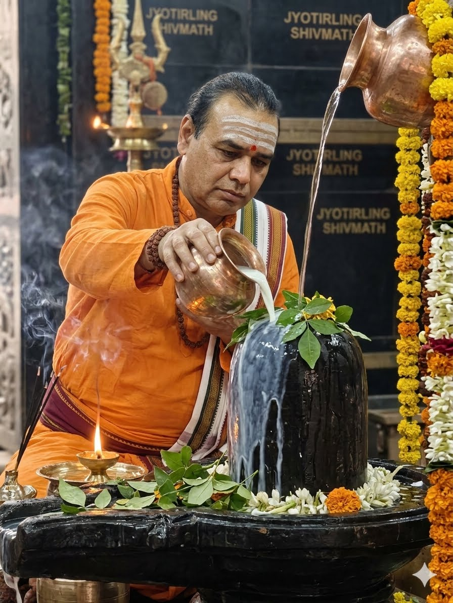

रुद्राभिषेक का महत्व
भगवान शिव की कृपा, शिवपुराण, वैदिक मंत्र, महामृत्युंजय जाप और आध्यात्मिक ऊर्जा का दिव्य रहस्य

📖 विषय सूची
1. रुद्राभिषेक क्या है? 2. शिवपुराण में रुद्राभिषेक 3. रुद्राभिषेक का आध्यात्मिक महत्व 4. आवश्यक पूजा सामग्री 5. रुद्राभिषेक की संपूर्ण विधि 6. वैदिक मंत्र और महामृत्युंजय जाप 7. रुद्राभिषेक के लाभ 8. श्रावण मास और रुद्राभिषेक 9. महाशिवरात्रि विशेष पूजा 10. 12 ज्योतिर्लिंगों में रुद्राभिषेक 11. श्री ज्योतिर्लिंग शिवमठ की विशेषता 12. शिवलिंग पर स्वाभाविक ॐ आकृति 13. SHIVMATH VAIDIK VIDYALAYA 14. सामान्य प्रश्न (FAQ) 15. संबंधित आध्यात्मिक लेखरुद्राभिषेक क्या है?
रुद्राभिषेक भगवान शिव की सबसे पवित्र, प्रभावशाली और कल्याणकारी उपासना मानी जाती है। “रुद्र” भगवान शिव का दिव्य एवं उग्र स्वरूप है तथा “अभिषेक” का अर्थ है पवित्र द्रव्यों द्वारा स्नान कराना। जब श्रद्धा, भक्ति और वैदिक मंत्रों के साथ शिवलिंग पर जल, गंगाजल, दुग्ध, दही, घृत, मधु, शक्कर और बेलपत्र अर्पित किए जाते हैं, तब उसे रुद्राभिषेक कहा जाता है। सनातन धर्म में यह पूजा केवल धार्मिक अनुष्ठान नहीं बल्कि आत्मशुद्धि, मानसिक शांति, आध्यात्मिक जागरण और शिव कृपा प्राप्त करने का दिव्य माध्यम मानी जाती है। भारत के प्राचीन शिव मंदिरों, ज्योतिर्लिंगों और सिद्ध पीठों में हजारों वर्षों से रुद्राभिषेक की परंपरा चली आ रही है। काशी विश्वनाथ, महाकालेश्वर, केदारनाथ, सोमनाथ, त्र्यंबकेश्वर, भीमाशंकर और बैद्यनाथ जैसे प्रसिद्ध ज्योतिर्लिंगों में प्रतिदिन लाखों भक्त भगवान महादेव का जलाभिषेक करते हैं। श्रावण मास, महाशिवरात्रि, प्रदोष व्रत तथा सोमवार के दिन रुद्राभिषेक का महत्व और अधिक बढ़ जाता है। ऐसा विश्वास है कि भगवान भोलेनाथ अत्यंत सरल और शीघ्र प्रसन्न होने वाले देव हैं, इसलिए श्रद्धा से किया गया अभिषेक भक्त के जीवन में शांति, शक्ति, स्वास्थ्य, समृद्धि और सकारात्मक ऊर्जा प्रदान करता है। शिवपुराण, लिंगपुराण तथा वैदिक ग्रंथों में रुद्राभिषेक का अत्यंत महत्त्व बताया गया है। वैदिक ऋषियों ने “ॐ नमः शिवाय”, श्री रुद्रम और महामृत्युंजय मंत्र के जाप के साथ शिव अभिषेक को मोक्षदायक साधना माना है। रुद्राभिषेक के समय मंदिरों में घंटा, शंख, डमरू और वैदिक मंत्रों की ध्वनि वातावरण को अत्यंत दिव्य बना देती है। यही कारण है कि शिव भक्ति, शिव पूजा, रुद्राभिषेक, महामृत्युंजय जाप और ज्योतिर्लिंग आज भी करोड़ों श्रद्धालुओं की आस्था का केंद्र बने हुए हैं। श्री ज्योतिर्लिंग शिवमठ में भी वैदिक विधि से नियमित रुद्राभिषेक, शिव पूजन, महामृत्युंजय जाप और धार्मिक अनुष्ठान संपन्न किए जाते हैं। यहाँ का आध्यात्मिक वातावरण भक्तों को विशेष शांति और शिव कृपा का अनुभव कराता है। ज्योतिर्लिंग शिवमठ का उद्देश्य सनातन धर्म, वैदिक संस्कृति, शिव भक्ति और आध्यात्मिक चेतना को जन-जन तक पहुँचाना है, ताकि आने वाली पीढ़ियाँ भी भगवान शिव की इस दिव्य परंपरा से जुड़ी रहें। हर हर महादेव।
शिवपुराण में रुद्राभिषेक
शिवपुराण में भगवान शिव की उपासना, रुद्राभिषेक, शिवलिंग पूजा और महामृत्युंजय साधना को अत्यंत पुण्यदायी बताया गया है। शिवपुराण के अनुसार भगवान महादेव स्वयं कहते हैं कि जो भक्त श्रद्धा, भक्ति और शुद्ध भाव से शिवलिंग का अभिषेक करता है, उस पर उनकी विशेष कृपा होती है। जल, दुग्ध, गंगाजल, बेलपत्र और वैदिक मंत्रों के साथ किया गया रुद्राभिषेक भक्त के जीवन से पाप, भय, रोग और मानसिक अशांति को दूर करने वाला माना गया है।
तस्य पुण्यफलं वक्तुं न शक्नोति महेश्वरः॥
अर्थ — जो भक्त सदैव शिवलिंग की पूजा और आराधना में लगा रहता है, उसके पुण्य का वर्णन स्वयं भगवान महेश्वर भी पूर्ण रूप से नहीं कर सकते।
शिवपुराण में रुद्राभिषेक को केवल एक धार्मिक क्रिया नहीं बल्कि आत्मशुद्धि और मोक्ष का मार्ग बताया गया है। भगवान शिव को “आशुतोष” कहा गया है अर्थात् वे अत्यंत शीघ्र प्रसन्न होने वाले देव हैं। इसलिए श्रद्धा से किया गया एक लोटा जलाभिषेक भी भक्त के लिए कल्याणकारी माना गया है।
प्रणत क्लेशनाशाय योगिनां पतये नमः॥
अर्थ — शांत स्वरूप, समस्त संसार के हरणकर्ता, परमात्मा भगवान शिव को नमस्कार है, जो भक्तों के कष्टों का नाश करने वाले तथा योगियों के स्वामी हैं।
वैदिक ग्रंथों और शिवपुराण में यह भी वर्णित है कि रुद्राभिषेक के समय “ॐ नमः शिवाय”, श्री रुद्रम तथा महामृत्युंजय मंत्र का जाप अत्यंत शुभ माना जाता है। अभिषेक के समय उत्पन्न होने वाली ध्वनि, मंत्र शक्ति और भक्तिभाव वातावरण को दिव्य आध्यात्मिक ऊर्जा से भर देते हैं। यही कारण है कि भारत के प्रमुख ज्योतिर्लिंगों, शिव मंदिरों और सिद्ध पीठों में प्रतिदिन रुद्राभिषेक किया जाता है।
उर्वारुकमिव बन्धनान्मृत्योर्मुक्षीय मामृतात्॥
अर्थ — हम तीन नेत्रों वाले भगवान शिव की उपासना करते हैं, जो सुगंध के समान सर्वत्र व्याप्त हैं और समस्त प्राणियों का पालन करते हैं। जैसे पका हुआ फल डंठल से सहज अलग हो जाता है, वैसे ही हम मृत्यु और बंधनों से मुक्त होकर अमृत स्वरूप मोक्ष को प्राप्त हों।
शिवपुराण में यह भी कहा गया है कि श्रावण मास, महाशिवरात्रि, प्रदोष व्रत और सोमवार के दिन किया गया रुद्राभिषेक विशेष फलदायी होता है। इसी कारण आज भी करोड़ों शिव भक्त ज्योतिर्लिंगों और प्राचीन शिव मंदिरों में भगवान भोलेनाथ का जलाभिषेक करते हैं।
श्री ज्योतिर्लिंग शिवमठ में भी वैदिक परंपरा के अनुसार रुद्राभिषेक, महामृत्युंजय जाप, शिव मंत्र साधना और शिव पूजा नियमित रूप से संपन्न की जाती है। यहाँ भक्त भगवान शिव की दिव्य उपस्थिति और आध्यात्मिक शांति का विशेष अनुभव करते हैं। हर हर महादेव।
रुद्राभिषेक का आध्यात्मिक महत्व
शिवपुराण, वेदों तथा प्राचीन आगम शास्त्रों में रुद्राभिषेक को भगवान शिव की सर्वोच्च उपासना में से एक माना गया है। यह केवल एक धार्मिक अनुष्ठान नहीं बल्कि आत्मशुद्धि, चेतना जागरण और शिवतत्त्व से जुड़ने की दिव्य साधना मानी जाती है। भगवान शिव को “आशुतोष” कहा गया है, अर्थात् वे अत्यंत शीघ्र प्रसन्न होने वाले देव हैं। इसी कारण श्रद्धा, भक्ति और वैदिक मंत्रों के साथ शिवलिंग पर अर्पित किया गया एक लोटा जल भी अत्यंत पुण्यदायी माना गया है।
शिवपुराण में भगवान शिव की उपासना को कलियुग में सबसे सरल और कल्याणकारी साधन बताया गया है। सूत जी ऋषियों से कहते हैं कि शिवपुराण का श्रवण, पाठ और शिव आराधना मनुष्य के पापों का नाश करके उसे शिवलोक तक पहुँचाने वाली है। शिवपुराण में वर्णित है:
शिवपुराण के अनुसार रुद्राभिषेक के समय जल, गंगाजल, दूध, दही, घृत, मधु, शक्कर, बेलपत्र और वैदिक मंत्रों का विशेष महत्व होता है। अभिषेक के समय उच्चारित “ॐ नमः शिवाय”, महामृत्युंजय मंत्र और श्री रुद्रम की ध्वनि वातावरण को दिव्य आध्यात्मिक ऊर्जा से भर देती है। भारतीय ऋषियों ने मंत्र शक्ति को चेतना जागरण का माध्यम माना है। जब शिव मंदिरों में घंटा, शंख, डमरू और वैदिक मंत्रों की ध्वनि गूँजती है, तब भक्त के मन में अद्भुत शांति और भक्ति का संचार होता है।
शिवलिंग सम्पूर्ण ब्रह्मांड की अनंत चेतना का प्रतीक माना गया है। शिवपुराण में शिव को निराकार, अनादि और समस्त सृष्टि का मूल तत्त्व कहा गया है। जब भक्त शिवलिंग का अभिषेक करता है, तब वह वास्तव में अपने भीतर के अहंकार, भय, क्रोध, मोह और अशांति को भगवान शिव के चरणों में समर्पित करता है। इसीलिए रुद्राभिषेक को केवल कर्मकाण्ड नहीं बल्कि ध्यान, योग और भक्ति का संयुक्त स्वरूप माना गया है।
यह रुद्राष्टक का प्रसिद्ध श्लोक भगवान शिव के उस दिव्य स्वरूप का वर्णन करता है जो सम्पूर्ण ब्रह्मांड में व्याप्त हैं। शिव उपासना का वास्तविक उद्देश्य बाहरी संसार से हटकर आंतरिक शांति, आत्मबल और परम चेतना की अनुभूति प्राप्त करना है।
महामृत्युंजय मंत्र के साथ किया गया रुद्राभिषेक विशेष रूप से स्वास्थ्य, मानसिक शक्ति, भयमुक्ति और आध्यात्मिक ऊर्जा प्रदान करने वाला माना गया है। शिवपुराण में पंचाक्षर मंत्र “ॐ नमः शिवाय” की महिमा का भी विशेष वर्णन मिलता है। यह मंत्र शिवतत्त्व से सीधे जुड़ने वाला महामंत्र माना गया है।
श्रावण मास, महाशिवरात्रि, प्रदोष व्रत और सोमवार के दिन रुद्राभिषेक का विशेष महत्व बताया गया है। इन्हीं पवित्र अवसरों पर लाखों श्रद्धालु काशी विश्वनाथ, महाकालेश्वर, केदारनाथ, सोमनाथ, त्र्यंबकेश्वर और अन्य ज्योतिर्लिंगों में भगवान शिव का जलाभिषेक करते हैं। ऐसा विश्वास है कि श्रद्धा से किया गया शिव अभिषेक मनुष्य के जीवन में सकारात्मक ऊर्जा, मानसिक शांति, आत्मविश्वास और आध्यात्मिक उन्नति लाता है।
श्री ज्योतिर्लिंग शिवमठ में भी वैदिक परंपरा के अनुसार नियमित रुद्राभिषेक, महामृत्युंजय जाप, शिव मंत्र साधना और शिव पूजा संपन्न की जाती है। यहाँ भक्तों को ध्यान, भक्ति और आध्यात्मिक शांति का विशेष अनुभव होता है। शिवलिंग पर समय-समय पर स्वाभाविक “ॐ” आकृति का प्रकट होना भक्तों की आस्था को और अधिक दृढ़ करता है। ज्योतिर्लिंग शिवमठ का उद्देश्य सनातन धर्म, वैदिक संस्कृति, शिव भक्ति और आध्यात्मिक चेतना को जन-जन तक पहुँचाना है। हर हर महादेव।
रुद्राभिषेक के लिए आवश्यक सामग्री
रुद्राभिषेक भगवान शिव की अत्यंत पवित्र और कल्याणकारी उपासना मानी जाती है। शिवपुराण तथा वैदिक परंपरा के अनुसार श्रद्धा, शुद्धता और भक्ति के साथ अर्पित की गई प्रत्येक सामग्री का विशेष आध्यात्मिक महत्व होता है। भगवान भोलेनाथ अत्यंत सरल और भावप्रिय माने जाते हैं, इसलिए सच्चे मन से अर्पित किया गया जल भी उन्हें प्रिय होता है। फिर भी वैदिक विधि से रुद्राभिषेक करने के लिए कुछ विशेष पूजन सामग्रियों का उपयोग किया जाता है।
रुद्राभिषेक में प्रयुक्त प्रत्येक वस्तु केवल बाहरी पूजा सामग्री नहीं बल्कि एक आध्यात्मिक प्रतीक मानी जाती है। जल पवित्रता और जीवन का प्रतीक है, दूध शुद्धता का, दही समृद्धि का, घृत तेज और ऊर्जा का, मधु मधुरता का तथा बेलपत्र भगवान शिव की प्रिय अर्पण सामग्री मानी जाती है। जब ये सभी सामग्री वैदिक मंत्रों और “ॐ नमः शिवाय” के जाप के साथ शिवलिंग पर अर्पित की जाती हैं, तब वातावरण में दिव्य आध्यात्मिक ऊर्जा का संचार होता है।
मुख्य पूजा सामग्री
• शुद्ध जल
• गंगाजल
• कच्चा दूध
• दही
• घृत (शुद्ध घी)
• शहद (मधु)
• शक्कर या मिश्री
• पंचामृत
• बेलपत्र
• भस्म
• चंदन
• अक्षत (चावल)
• धतूरा
• आक के पुष्प
• भांग पत्र
• सफेद पुष्प
• रुद्राक्ष माला
• धूप और दीप
• कपूर
• नैवेद्य और फल
• नारियल
• मौली (कलावा)
• स्वच्छ वस्त्र
• पूजा आसन
जल और गंगाजल का महत्व
शिवपुराण में जलाभिषेक को अत्यंत पुण्यदायी बताया गया है। जल जीवन, शुद्धता और चेतना का प्रतीक माना जाता है। गंगाजल को विशेष रूप से पवित्र माना गया है क्योंकि माता गंगा भगवान शिव की जटाओं से प्रकट हुई हैं। श्रद्धा से अर्पित जल भक्त के मन और वातावरण दोनों को पवित्र करने वाला माना गया है।
दूध और पंचामृत
दूध पवित्रता और सात्विकता का प्रतीक माना जाता है। दही, घृत, मधु और शक्कर के साथ मिलाकर तैयार किया गया पंचामृत शिव अभिषेक में अत्यंत शुभ माना जाता है। वैदिक मान्यता के अनुसार पंचामृत अभिषेक से जीवन में सुख, समृद्धि और सकारात्मक ऊर्जा का संचार होता है।
बेलपत्र का विशेष महत्व
भगवान शिव को बेलपत्र अत्यंत प्रिय माना गया है। तीन पत्तियों वाला बेलपत्र शिव के त्रिनेत्र, त्रिगुण और त्रिशूल का प्रतीक माना जाता है। शिवपुराण में कहा गया है कि श्रद्धा से अर्पित किया गया बेलपत्र अनेक यज्ञों के समान पुण्य प्रदान करता है।
त्रिजन्म पापसंहारं एकबिल्वं शिवार्पणम्॥
अर्थ — तीन दल वाला बेलपत्र भगवान शिव के त्रिनेत्र और त्रिशूल का प्रतीक है। श्रद्धा से अर्पित एक बेलपत्र भी तीन जन्मों के पापों का नाश करने वाला माना गया है।
भस्म और रुद्राक्ष
भस्म वैराग्य, नश्वरता और आत्मज्ञान का प्रतीक मानी जाती है। भगवान शिव को भस्म अत्यंत प्रिय है। इसी प्रकार रुद्राक्ष को शिव के आँसुओं से उत्पन्न माना गया है और इसे धारण करना अत्यंत शुभ समझा जाता है। रुद्राक्ष माला के साथ “ॐ नमः शिवाय” मंत्र का जाप मानसिक शांति और आध्यात्मिक शक्ति प्रदान करने वाला माना जाता है।
धूप, दीप और कपूर
रुद्राभिषेक के अंत में धूप, दीप और कपूर से भगवान शिव की आरती की जाती है। दीपक ज्ञान और प्रकाश का प्रतीक है जबकि कपूर अहंकार और नकारात्मकता के पूर्ण समर्पण का प्रतीक माना जाता है। आरती के समय घंटा, शंख और डमरू की ध्वनि वातावरण को अत्यंत भक्तिमय और दिव्य बना देती है।
श्री ज्योतिर्लिंग शिवमठ में भी वैदिक परंपरा के अनुसार इन पवित्र सामग्रियों से नियमित रुद्राभिषेक, शिव पूजा और महामृत्युंजय जाप संपन्न किए जाते हैं। यहाँ भक्तों को भगवान शिव की कृपा, मानसिक शांति और आध्यात्मिक ऊर्जा का विशेष अनुभव होता है। हर हर महादेव।
रुद्राभिषेक की संपूर्ण वैदिक विधि
वैदिक परंपरा में रुद्राभिषेक भगवान शिव की अत्यंत पवित्र, प्रभावशाली और मोक्षदायी उपासना मानी जाती है। शिवपुराण, वेद और आगम शास्त्रों में वर्णित यह विधि केवल पूजा नहीं बल्कि आत्मशुद्धि, चेतना जागरण और शिवतत्त्व से जुड़ने की दिव्य साधना है। नीचे दी गई विधि पारंपरिक वैदिक रुद्राभिषेक क्रम पर आधारित है।
भाग १ : अभिषेक पूर्व की प्रारंभिक तैयारी एवं संकल्प
१. पवित्रीकरण (Purification)
यः स्मरेत्पुण्डरीकाक्षं स बाह्याभ्यन्तरः शुचिः॥
२. आसन शुद्धि (Asana Shuddhi)
त्वं च धारय मां देवि पवित्रं कुरु चासनम्॥
३. संकल्प (Sankalpa)
अहं मम कायिक-वाचिक-मानसिक ज्ञात-अज्ञात पापकषयार्थं,
दीर्घायु-आरोग्य-ऐश्वर्य-प्राप्त्यर्थं,
शिवपुराणोक्त विधिना साम्बसदाशिवस्य रुद्राभिषेकं करिष्ये॥
भाग २ : प्रधान षोडशोपचार पूजन
१. ध्यान (Meditation)
रत्नाकल्पोज्ज्वलाङ्गं परशुमृगवराभीतिहस्तं प्रसन्नम्॥
पद्मासीनं समंतात्स्तुतममरगणैर्व्याघ्रकृत्तिं वसानम्।
विश्वाद्यं विश्वबीजं निखिलभयहरं पञ्चवक्त्रं त्रिनेत्रम्॥
२. आवाहन (Invocation)
३. आसन समर्पण
आसनं च मया दत्तं गृहाण परमेश्वर॥
४. पाद्य
पाद्यं गृहाण देवेश मया दत्तं हि भक्तितः॥
५. अर्घ्य
गृहाण परमेशान प्रसन्नो भव सर्वदा॥
६. आचमन
आचम्यतां मया दत्तं प्रसीद परमेश्वर॥
भाग ३ : मूल रुद्राभिषेक एवं पंचब्रह्म मंत्र
१. पंचामृत स्नान
शर्करया समायुक्तं स्नानार्थं प्रतिगृह्यताम्॥
२. सद्योजात मंत्र
भवे भवे नातिभवे भवस्व मां भवोद्भावाय नमः॥
३. वामदेव मंत्र
४. अघोर मंत्र
सर्वतः शर्व सर्वेभ्यो नमस्ते अस्तु रुद्ररूपेभ्यः॥
५. तत्पुरुष मंत्र
तन्नो रुद्रः प्रचोदयात्॥
६. ईशान मंत्र
ब्रह्माधिपतिर्ब्रह्मणोऽधिपतिर्ब्रह्मा शिवो मे अस्तु सदाशिवोम्॥
भाग ४ : उत्तर पूजन एवं महाआरती
१. बिल्वपत्र समर्पण
त्रिजन्मपापसंहारं बिल्वपत्रं शिवार्पणम्॥
२. धूप-दीप समर्पण
धूपोऽयं प्रतिगृह्यताम्॥
दीपं गृहाण देवेश त्रैलोक्यतिमिरापहम्॥
३. नैवेद्य
आहारं भक्ष्यभोज्यं च नैवेद्यं प्रतिगृह्यताम्॥
४. कर्पूर आरती
सदा वसन्तं हृदयारविन्दे भवं भवानीसहितं नमामि॥
५. क्षमा प्रार्थना
पूजां चैव न जानामि क्षमस्व परमेश्वर॥
मन्त्रहीनं क्रियाहीनं भक्तिहीनं सुरेश्वर।
यत्पूजितं मया देव परिपूर्णं तदस्तु मे॥
श्रद्धा, भक्ति और वैदिक मंत्रों के साथ किया गया रुद्राभिषेक भगवान शिव की विशेष कृपा प्रदान करने वाला माना गया है। शिवपुराण के अनुसार जो भक्त नियमपूर्वक शिवलिंग का अभिषेक करता है, उसके जीवन में शांति, स्वास्थ्य, सकारात्मक ऊर्जा और आध्यात्मिक उन्नति का संचार होता है। श्री ज्योतिर्लिंग शिवमठ में भी वैदिक परंपरा के अनुसार नियमित रुद्राभिषेक, महामृत्युंजय जाप और शिव पूजा संपन्न की जाती है। हर हर महादेव।
वैदिक मंत्र और महामृत्युंजय जाप
॥ श्रीरुद्राष्टाध्यायी - प्रथमोध्यायः ॥
(शिवसंकल्पसूक्त)
निधीनां त्वा निधिपतिं हवामहे व्वसो मम।
आहमजानि गर्भधमा त्वमजासि गर्भधम्॥
ॐ शिवसंकल्पमस्तु॥
ॐ यज्जाग्रतो दूरमुदैति दैवं तदु सुप्तस्य तथैवैति।
दूरङ्गमं ज्योतिषां ज्योतिरेकं तन्मे मनः शिवसंकल्पमस्तु॥ १ ॥
ॐ येन कर्माण्यपसो मनीषिणो यज्ञे कृण्वन्ति विदथेषु धीराः।
यदपूर्वं यक्षमन्तः प्रजानां तन्मे मनः शिवसंकल्पमस्तु॥ २ ॥
ॐ यत्प्रज्ञानमुत चेतो धृतिश्च यज्ज्योतिरन्तरमृतं प्रजासु।
यस्मान्न ऋते किञ्चन कर्म क्रियते तन्मे मनः शिवसंकल्पमस्तु॥ ३ ॥
ॐ येनेदं भूतं भुवनं भविष्यत्परिगृहीतममृतेन सर्वम्।
येन यज्ञस्तन्वते सप्तहोता तन्मे मनः शिवसंकल्पमस्तु॥ ४ ॥
ॐ यस्मिन्नृचः साम यजूंषि यस्मिन्प्रतिष्ठिता रथनाभाविवाराः।
यस्मिंश्चित्तं सर्वमोतं प्रजानां तन्मे मनः शिवसंकल्पमस्तु॥ ५ ॥
ॐ सुसारथिरश्वानिव यन्मनुष्यान्नेनीयतेऽभीशुभिर्वाजिन इव।
हृत्प्रतिष्ठं यदजिरं जविष्ठं तन्मे मनः शिवसंकल्पमस्तु॥ ६ ॥
॥ इति प्रथमोध्यायः ॥
॥ श्रीरुद्राष्टाध्यायी - द्वितीयाध्यायः ॥
(पुरुषसूक्त)
स भूमिं विश्वतो वृत्वात्यतिष्ठद्दशाङ्गुलम्॥ १ ॥
पुरुष एवेदं सर्वं यद्भूतं यच्च भव्यम्।
उतामृतत्वस्येशानो यदन्नेनातिरोहति॥ २ ॥
एतावानस्य महिमातो ज्यायाँश्च पूरुषः।
पादोऽस्य विश्वा भूतानि त्रिपादस्यामृतं दिवि॥ ३ ॥
त्रिपादूर्ध्व उदैत्पुरुषः पादोऽस्येहाभवत्पुनः।
ततो विष्वङ् व्यक्रामत्साशनानशने अभि॥ ४ ॥
तस्माद्विराळजायत विराजो अधि पूरुषः।
स जातो अत्यरिच्यत पश्चाद्भूमिमथो पुरः॥ ५ ॥
यत्पुरुषेण हविषा देवा यज्ञमतन्वत।
वसन्तो अस्यासीदाज्यं ग्रीष्म इध्मश्शरद्धविः॥ ६ ॥
सप्तास्यासन्परिधयस्त्रिस्सप्त समिधः कृताः।
देवा यद्यज्ञं तन्वाना अबध्नन्पुरुषं पशुम्॥ ७ ॥
तं यज्ञं बर्हषि प्रौक्षन्पुरुषं जातमग्रतः।
तेन देवा अयजन्त साध्या ऋषयश्च ये॥ ८ ॥
तस्माद्यज्ञात्सर्वहुतः सम्भृतं पृषदाज्यम्।
पशूंस्तांश्चक्रे वायव्यानारण्यान्ग्राम्याश्च ये॥ ९ ॥
तस्माद्यज्ञात्सर्वहुत ऋचः सामानि जज्ञिरे।
छन्दांसि जज्ञिरे तस्माद्यजुस्तस्मादजायत॥ १० ॥
तस्मादश्वा अजायन्त ये के चोभयादतः।
गावो ह जज्ञिरे तस्मात्तस्माज्जाता अजावयः॥ ११ ॥
यत्पुरुषं व्यदधुः कतिधा व्यकल्पयन्।
मुखं किमस्यासीत्किं बाहू किमूरू पादा उच्येते॥ १२ ॥
ब्राह्मणोऽस्य मुखमासीद्बाहू राजन्यः कृतः।
ऊरू तदस्य यद्वैश्यः पद्भ्यां शूद्रो अजायत॥ १३ ॥
चन्द्रमा मनसो जातश्चक्षोः सूर्यो अजायत।
मुखादिन्द्रश्चाग्निश्च प्राणाद्वायुरजायत॥ १४ ॥
नाभ्या आसीदन्तरिक्षं शीर्ष्णो द्यौः समवर्तत।
पद्भ्यां भूमिर्दिशः श्रोत्रात्तथा लोकाँ अकल्पयन्॥ १५ ॥
वेदाहमेतं पुरुषं महान्तमादित्यवर्णं तमसः परस्तात्।
तमेव विदित्वाति मृत्युमेति नान्यः पन्था विद्यतेऽयनाय॥ १६ ॥
ॐ शान्तिः शान्तिः शान्तिः॥
अथ तृतीयोऽध्यायः ।
(अप्रतिरथसूक्तम् ।)
हरिः ॐ
आशुः शिशानो वृषभो न भीमो घनाघनः क्षोभणश्चर्षणीनाम् ।
संक्रन्दनोऽनिमिष एकवीरः शतꣳ सेना अजयत्साकमिन्द्रः ॥ १॥
संक्रन्दनेनाऽनिमिषेण जिष्णुना युत्कारेण दुश्च्यवनेन धृष्णुना ।
तदिन्द्रेण जयत तत्सहध्वं युधो नर इषुहस्तेन वृष्णा ॥ २॥
स इषुहस्तैः स निषङ्गिभिर्वशी सꣳस्रष्टा स युध इन्द्रो गणेन ।
सꣳसृष्टजित्सोमपा बाहुशर्ध्युग्रधन्वा प्रतिहिताभिरस्ता ॥ ३॥
बृहस्पते परिदीया रथेन रक्षोहामित्राँ२ अपबाधमानः ।
प्रभञ्जन्त्सेनाः प्रमृणो युधा जयन्नस्माकमेध्यविता रथानाम् ॥ ४॥
बलविज्ञायः स्थविरः प्रवीरः सहस्वान्वाजी सहमान उग्रः ।
अभिवीरो अभिसत्वा सहोजा जैत्रमिन्द्र रथमातिष्ठ गोवित् ॥ ५॥
गोत्रभिदं गोविदं वज्रबाहुं जयन्तमज्म प्रमृणन्तमोजसा ।
इमꣳ सजाता अनु वीरयध्वमिन्द्रꣳ सखायो अनु सꣳरभध्वम् ॥ ६॥
अभि गोत्राणि सहसा गाहमानोऽदयो वीरः शतमन्युरिन्द्रः ।
दुश्च्यवनः पृतनाषाडयुध्योऽस्माकꣳ सेना अवतु प्र युत्सु ॥ ७॥
इन्द्र आसां नेता बृहस्पतिर्दक्षिणा यज्ञः पुर एतु सोमः ।
देवसेनानामभिभञ्जतीनां जयन्तीनां मरुतो यन्त्वग्रम् ॥ ८॥
इन्द्रस्य वृष्णो वरुणस्य राज्ञ आदित्यानां मरुताꣳ शर्ध उग्रम् ।
महामनसां भुवनच्यवानां घोषो देवानां जयतामुदस्थात् ॥ ९॥
उद्धर्षय मघवन्नायुधान्युत्सत्वनां मामकानां मनाꣳसि ।
उद्वृत्रहन्वाजिनां वाजिनान्युद्रथानां जयतां यन्तु घोषाः ॥ १०॥
अस्माकमिन्द्रः समृतेषु ध्वजेष्वस्माकं या इषवस्ता जयन्तु ।
अस्माकं वीरा उत्तरे भवन्त्वस्माँ२ उ देवा अवता हवेषु ॥ ११॥
अमीषां चित्तं प्रतिलोभयन्ती गृहाणाङ्गान्यप्वे परेहि ।
अभि प्रेहि निर्दह हृत्सु शोकैरन्धेनामित्रास्तमसा सचन्ताम् ॥ १२॥
अवसृष्टा परापत शरव्ये ब्रह्मसꣳशिते ।
गच्छामित्रान्प्रपद्यस्व मामीषाङ्कञ्चनोच्छिषः ॥ १३॥
प्रेता जयता नर इन्द्रो वः शर्म यच्छतु ।
उग्रा वः सन्तु बाहवोऽनाधृष्या यथासथ ॥ १४॥
असौ या सेना मरुतः परेषामभ्यैति न ओजसा स्पर्धमाना ।
तां गूहत तमसाऽपव्रतेन यथामी अन्यो अन्यं न जानन् ॥ १५॥
यत्र बाणाः सम्पतन्ति कुमारा विशिखा इव ।
तन्न इन्द्रो बृहस्पतिरदितिः शर्म यच्छतु विश्वाहा शर्म यच्छतु ॥ १६॥
मर्माणि ते वर्मणा छादयामि सोमस्त्वा राजाऽमृतेनानुवस्ताम् ।
उरोर्वरीयो वरुणस्ते कृणोतु जयन्तं त्वानु देवा मदन्तु ॥ १७॥
इति रुद्रे तृतीयोऽध्यायः ॥ ३ ॥
अथ चतुर्थोऽध्यायः ।
(सौरसूक्तम् / सूर्यसूक्तम् / मित्रसूक्तम् / मैत्रसूक्तम् ।)
हरिः ॐ
विभ्राड्बृहत्पिबतु सोम्यं मध्वायुर्दधद्यज्ञपतावविह्रुतम् ।
वातजूतो यो अभिरक्षति त्मना प्रजाः पुपोष पुरुधा वि राजति ॥ १॥
उदु त्यं जातवेदसं देवं वहन्ति केतवः ।
दृशे विश्वाय सूर्यम् ॥ २॥
येना पावक चक्षसा भुरण्यन्तं जनाँ२ ॥ अनु ।
त्वं वरुण पश्यसि ॥ ३॥
दैव्यावध्वर्यू आगतꣳ रथेन सूर्यत्वचा । मध्वा यज्ञꣳ समञ्जाथे ।
तं प्रत्नथाऽयं वेनश्चित्रं देवानाम् ॥ ४॥
तं प्रत्नथा पूर्वथा विश्वथेमथा ज्येष्ठतातिं बर्हिषदꣳस्वर्विदम् ।
प्रतीचीनं वृजनं दोहसे धुनिमाशुं जयन्तमनु यासु वर्धसे ॥ ५॥
अयं वेनश्चोदयत्पृश्निगर्भा ज्योतिर्जरायू रजसो विमाने ।
इममपाꣳसङ्गमे सूर्यस्य शिशुंन विप्रा मतिभी रिहन्ति ॥ ६॥
चित्रं देवानामुदगादनीकं चक्षुर्मित्रस्य वरुणस्याग्नेः ।
आप्रा द्यावापृथिवी अन्तरिक्षꣳ सूर्य आत्मा जगतस्तस्थुषश्च ॥ ७॥
आ न इडाभिर्विदथे सुशस्ति विश्वानरः सविता देव एतु ।
अपि यथा युवानो मत्सथा नो विश्वं जगदभिपित्वे मनीषा ॥ ८॥
यदद्य कच्च वृत्रहन्नुदगा अभि सूर्य ।
सर्वं तदिन्द्र ते वशे ॥ ९॥
तरणिर्विश्वदर्शतो ज्योतिष्कृदसि सूर्य ।
विश्वमा भासि रोचनम् ॥ १०॥
तत्सूर्यस्य देवत्वं तन्महित्वं मध्या कर्तोर्विततꣳ सं जभार ।
यदेदयुक्त हरितः सधस्थादाद्रात्री वासस्तनुते सिमस्मै ॥ ११॥
तन्मित्रस्य वरुणस्याभिचक्षे सूर्यो रूपं कृणुते द्योरुपस्थे ।
अनन्तमन्यद्रुशदस्य पाजः कृष्णमन्यद्धरितः सं भरन्ति ॥ १२॥
बण्महाँ२ ॥ असि सूर्य बडादित्य महाँ२ ॥ असि ।
महस्ते सतो महिमा पनस्यतेऽद्धा देव महाँ२ ॥ असि ॥ १३॥
बट् सूर्य श्रवसा महाँ२ ॥ असि । सत्रा देव महाँ२ ॥ असि ।
मह्ना देवानामसुर्यः पुरोहितो विभु ज्योतिरदाभ्यम् ॥ १४॥
श्रायन्त इव सूर्यं विश्वेदिन्द्रस्य भक्षत ।
वसूनि जाते जनमान ओजसा प्रति भागं न दीधिम ॥ १५॥
अद्या देवा उदिता सूर्यस्य निरꣳहसः पिपृता निरवद्यात् ।
तन्नो मित्रो वरुणो मामहन्तामदितिः सिन्धुः पृथिवी उत द्यौः ॥ १६॥
आ कृष्णेन रजसा वर्तमानो निवेशयन्नमृतं मर्त्यं च ।
हिरण्ययेन सविता रथेना देवो याति भुवनानि पश्यन् ॥ १७॥
इति रुद्रे चतुर्थोऽध्यायः ॥ ४ ॥
अथ पञ्चमोऽध्यायः
(रुद्रसूक्तम् / नीलसूक्तम्)
नमस्ते रुद्र मन्यव उतो त इषवे नमः ।
बाहुभ्यामुत ते नमः ॥ १॥
या ते रुद्र शिवा तनूरघोराऽपापकाशिनी ।
तया नस्तन्वा शन्तमया गिरिशन्ताभि चाकशीहि ॥ २॥
यामिषुं गिरिशन्त हस्ते बिभर्ष्यस्तवे ।
शिवां गिरित्र तां कुरु मा हिꣳसीः पुरुषं जगत् ॥ ३॥
शिवेन वचसा त्वा गिरिशाऽच्छावदामसि ।
यथा नः सर्वमिज्जगदयक्ष्मꣳ सुमना असत् ॥ ४॥
अध्यवोचदधिवक्ता प्रथमो दैव्यो भिषक् ।
अहीꣳश्च सर्वाञ्जम्भयन्त्सर्वाश्च यातुधान्योऽधराचीः परासुव ॥ ५॥
असौ यस्ताम्रो अरुण उत बभ्रुः सुमङ्गलः ।
ये चैनꣳ रुद्रा अभितो दिक्षु श्रिताः सहस्रशोऽवैषाꣳ हेड ईमहे ॥ ६॥
असौ योऽवसर्पति नीलग्रीवो विलोहितः ।
उतैनं गोपा अदृश्रन्नदृश्रन्नुदहार्यः स दृष्टो मृडयाति नः ॥ ७॥
नमोऽस्तु नीलग्रीवाय सहस्राक्षाय मीढुषे ।
अथो ये अस्य सत्वानोऽहं तेभ्योऽकरं नमः ॥ ८॥
प्रमुञ्च धन्वनस्त्वमुभयोरार्त्न्योर्ज्याम् ।
याश्च ते हस्त इषवः परा ता भगवो वप ॥ ९॥
विज्यं धनुः कपर्दिनो विशल्यो बाणवाँ२ ॥ उत ।
अनेशन्नस्य या इषव आभुरस्य निषङ्गधिः ॥ १०॥
या ते हेतिर्मीढुष्टम हस्ते बभूव ते धनुः ।
तयास्मान्विश्वतस्त्वमयक्ष्मया परिभुज ॥ ११॥
परि ते धन्वनो हेतिरस्मान्वृणक्तु विश्वतः ।
अथो य इषुधिस्तवारे अस्मन्निधेहि तम् ॥ १२॥
अवतत्य धनुष्ट्वꣳ सहस्राक्ष शतेषुधे ।
निशीर्य शल्यानां मुखा शिवो नः सुमना भव ॥ १३॥
नमस्त आयुधायानातताय धृष्णवे ।
उभाभ्यामुत ते नमो बाहुभ्यां तव धन्वने ॥ १४॥
मा नो महान्तमुत मा नो अर्भकं मा न उक्षन्तमुत मा न उक्षितम् ।
मा नो वधीः पितरं मोत मातरं मा नः प्रियास्तन्वो रुद्र रीरिषः ॥ १५॥
मा नस्तोके तनये मा न आयुषि मा नो गोषु मा नो अश्वेषु रीरिषः ।
मा नो वीरान् रुद्र भामिनो वधीर्हविष्मन्तः सदमित्त्वा हवामहे ॥ १६॥
नमो हिरण्यबाहवे सेनान्ये दिशां च पतये नमो
नमो वृक्षेभ्यो हरिकेशेभ्यः पशूनां पतये नमो
नमः शष्पिञ्जराय त्विषीमते पथीनां पतये नमो
नमो हरिकेशायोपवीतिने पुष्टानां पतये नमः ॥ १७॥
नमो बभ्लुशाय व्याधिनेऽन्नानां पतये नमो
नमो भवस्य हेत्यै जगतां पतये नमो
नमो रुद्रायाततायिने क्षेत्राणां पतये नमो
नमः सूतायाहन्त्यै वनानां पतये नमः ॥ १८॥
नमो रोहिताय स्थपतये वृक्षाणां पतये नमो
नमो भुवन्तये वारिवस्कृतायौषधीनां पतये नमो
नमो मन्त्रिणे वाणिजाय कक्षाणां पतये नमो
नम उच्चैर्घोषायाक्रन्दयते पत्तीनां पतये नमः ॥ १९॥
नमः कृत्स्नायतया धावते सत्वनां पतये नमो
नमः सहमानाय निव्याधिन आव्याधिनीनां पतये नमो
नमो निषङ्गिणे ककुभाय स्तेनानां पतये नमो
नमो निचेरवे परिचरायारण्यानां पतये नमः ॥ २०॥
नमो वञ्चते परिवञ्चते स्तायूनां पतये नमो
नमो निषङ्गिण इषुधिमते तस्कराणां पतये नमो
नमः सृकायिभ्यो जिघाꣳसद्भ्यो मुष्णतां पतये नमो
नमोऽसिमद्भ्यो नक्तञ्चरद्भ्यो विकृन्तानां पतये नमः ॥ २१॥
नम उष्णीषिणे गिरिचराय कुलुञ्चानां पतये नमो
नम इषुमद्भ्यो धन्वायिभ्यश्च वो नमो
नम आतन्वानेभ्यः प्रतिदधानेभ्यश्च वो नमो
नम आयच्छद्भ्योऽस्यद्भ्यश्च वो नमः ॥ २२॥
नमो विसृजद्भ्यो विध्यद्भ्यश्च वो नमो
नमः स्वपद्भ्यो जाग्रद्भ्यश्च वो नमो
नमः शयानेभ्य आसीनेभ्यश्च वो नमो
नमस्तिष्ठद्भ्यो धावद्भ्यश्च वो नमः ॥ २३॥
नमः सभाभ्यः सभापतिभ्यश्च वो नमो
नमोऽश्वेभ्योऽश्वपतिभ्यश्च वो नमो
नम आव्याधिनीभ्यो विविध्यन्तीभ्यश्च वो नमो
नम उगणाभ्यस्तृꣳहतीभ्यश्च वो नमः ॥ २४॥
नमो गणेभ्यो गणपतिभ्यश्च वो नमो
नमो व्रातेभ्यो व्रातपतिभ्यश्च वो नमो
नमो गृत्सेभ्यो गृत्सपतिभ्यश्च वो नमो
नमो विरूपेभ्यो विश्वरूपेभ्यश्च वो नमः ॥ २५॥
नमः सेनाभ्यः सेनानिभ्यश्च वो नमो
नमो रथिभ्यो अरथेभ्यश्च वो नमो
नमः क्षत्तृभ्यः संग्रहीतृभ्यश्च वो नमो
नमो महद्भ्यो अर्भकेभ्यश्च वो नमः ॥ २६॥
नमस्तक्षभ्यो रथकारेभ्यश्च वो नमो
नमः कुलालेभ्यः कर्मारेभ्यश्च वो नमो
नमो निषादेभ्यः पुञ्जिष्टेभ्यश्च वो नमो
नमः श्वनिभ्यो मृगयुभ्यश्च वो नमः ॥ २७॥
नमः श्वभ्यः श्वपतिभ्यश्च वो नमो
नमो भवाय च रुद्राय च
नमः शर्वाय च पशुपतये च
नमो नीलग्रीवाय च शितिकण्ठाय च ॥ २८॥
नमः कपर्दिने च व्युप्तकेशाय च
नमः सहस्राक्षाय च शतधन्वने च
नमो गिरिशयाय च शिपिविष्टाय च
नमो मीढुष्टमाय चेषुमते च ॥ २९॥
नमो ह्रस्वाय च वामनाय च
नमो बृहते च वर्षीयसे च
नमो वृद्धाय च सवृधे च
नमोऽग्र्याय च प्रथमाय च ॥ ३०॥
नम आशवे चाजिराय च
नमः शीघ्र्याय च शीभ्याय च
नम ऊर्म्याय चावस्वन्याय च
नमो नादेयाय च द्वीप्याय च ॥ ३१॥
नमो ज्येष्ठाय च कनिष्ठाय च
नमः पूर्वजाय चापरजाय च
नमो मध्यमाय चापगल्भाय च
नमो जघन्याय च बुध्न्याय च ॥ ३२॥
नमः सोभ्याय च प्रतिसर्याय च
नमो याम्याय च क्षेम्याय च
नमः श्लोक्याय चावसान्याय च
नम उर्वर्याय च खल्याय च ॥ ३३॥
नमो वन्याय च कक्ष्याय च
नमः श्रवाय च प्रतिश्रवाय च
नम आशुषेणाय चाशुरथाय च
नमः शूराय चावभेदिने च ॥ ३४॥
नमो बिल्मिने च कवचिने च
नमो वर्मिणे च वरूथिने च
नमः श्रुताय च श्रुतसेनाय च
नमो दुन्दुभ्याय चाहनन्याय च ॥ ३५॥
नमो धृष्णवे च प्रमृशाय च
नमो निषङ्गिणे चेषुधिमते च
नमस्तीक्ष्णेषवे चायुधिने च
नमः स्वायुधाय च सुधन्वने च ॥ ३६॥
नमः स्रुत्याय च पथ्याय च
नमः काट्याय च नीप्याय च
नमः कुल्याय च सरस्याय च
नमो नादेयाय च वैशन्ताय च ॥ ३७॥
नः कूप्याय चावट्याय च
नमो वीध्र्याय चातप्याय च
नमो मेघ्याय च विद्युत्याय च
नमो वर्ष्याय चावर्ष्याय च ॥ ३८॥
नमो वात्याय च रेष्म्याय च
नमो वास्तव्याय च वास्तुपाय च
नमः सोमाय च रुद्राय च
नमस्ताम्राय चारुणाय च ॥ ३९॥
नमः शङ्गवे च पशुपतये च
नम उग्राय च भीमाय च
नमोऽग्रेवधाय च दूरेवधाय च
नमो हन्त्रे च हनीयसे च
नमो वृक्षेभ्यो हरिकेशेभ्यो नमस्ताराय ॥ ४०॥
नमः शम्भवाय च मयोभवाय च
नमः शङ्कराय च मयस्कराय च
नमः शिवाय च शिवतराय च ॥ ४१॥
इति रुद्रे पञ्चमोऽध्यायः ॥ ५॥
अथ षष्ठोऽध्यायः
(महच्छिर / सोमस्तवन / त्र्यम्बक यजनम्)
वयꣳसोम व्रते तव मनस्तनूषु बिभ्रतः ।
प्रजावन्तः सचेमहि ॥ १॥
एष ते रुद्र भागः सह स्वस्राऽम्बिकया तं जुषस्व स्वाहैष ते रुद्र भाग आखुस्ते पशुः ॥ २॥
अव रुद्रमदीमह्यव देवं त्र्यम्बकम् ।
यथा नो वस्यसस्करद्यथा नः श्रेयसस्करद्यथा नो व्यवसाययात् ॥ ३॥
भेषजमसि भेषजं गवेऽश्वाय पुरुषाय भेषजम् ।
सुखं मेषाय मेष्यै ॥ ४॥
त्र्यम्बकं यजामहे सुगन्धिं पुष्टिवर्धनम् ।
उर्वारुकमिव बन्धनान्मृत्योर्मुक्षीय माऽमृतात् ।
त्र्यम्बकं यजामहे सुगन्धिं पतिवेदनम् ।
उर्वारुकमिव बन्धनादितो मुक्षीय मामुतः ॥ ५॥
एतत्ते रुद्रावसं तेन परो मूजवतोऽतीहि ।
अवततधन्वा पिनाकावसः कृत्तिवासा अहिꣳसन्नः शिवोऽतीहि ॥ ६॥
त्र्यायुषं जमदग्नेः कश्यपस्य त्र्यायुषम् ।
यद्देवेषु त्र्यायुषं तन्नो अस्तु त्र्यायुषम् ॥ ७॥
शिवो नामासि स्वधितिस्ते पिता नमस्ते अस्तु मा मा हिꣳसीः ।
निवर्तयाम्यायुषेऽन्नाद्याय प्रजननाय रायस्पोषाय सुप्रजास्त्वाय सुवीर्याय ॥ ८॥
इति रुद्रे षष्ठोऽध्यायः ॥ ६॥
अथ सप्तमोऽध्यायः
अथ जटाऽध्याय
उग्रश्च भीमश्च ध्वान्तश्च धुनिश्च ।
सासह्वांश्चाभियुग्वा च विक्षिपः स्वाहा ॥ १॥
अग्निꣳ हृदयेनाशनिꣳ हृदयाग्रेण पशुपतिं कृत्स्नहृदयेन भवं यक्ना ।
शर्वं मतस्नाभ्यामीशानं मन्युना महादेवमन्तः पर्शव्येनोग्रं
देवं वनिष्ठुना वसिष्ठहनुः शिङ्गीनि कोश्याभ्याम् ॥ २॥
उग्रं ल्लोहितेन मित्रꣳ सौव्रत्येन रुद्रं दौर्व्रत्येनेन्द्रं प्रक्रीडेन मरुतो बलेन साध्यान्प्रमुदा ।
भवस्य कण्ठ्यꣳ रुद्रस्यान्तः पार्श्व्यं महादेवस्य यकृच्छर्वस्य वनिष्ठुः पशुपतेः पुरीतत् ॥ ३॥
लोमभ्यः स्वाहा लोमभ्यः स्वाहा त्वचे स्वाहा त्वचे स्वाहा
लोहिताय स्वाहा लोहिताय स्वाहा मेदोभ्यः स्वाहा मेदोभ्यः स्वाहा ।
माꣳसेभ्यः स्वाहा माꣳसेभ्यः स्वाहा स्नावभ्यः स्वाहा स्नावभ्यः स्वाहा
अस्थभ्यः स्वाहा अस्थभ्यः स्वाहा मज्जभ्यः स्वाहा मज्जभ्यः स्वाहा ।
रेतसे स्वाहा पायवे स्वाहा ॥ ४॥
आयासाय स्वाहा प्रायासाय स्वाहा संयासाय स्वाहा वियासाय स्वाहोद्यासाय स्वाहा ।
शुचे स्वाहा शोचते स्वाहा शोचमानाय स्वाहा शोकाय स्वाहा ॥ ५॥
तपसे स्वाहा तप्यते स्वाहा तप्यमानाय स्वाहा तप्ताय स्वाहा घर्माय स्वाहा ।
निष्कृत्यै स्वाहा प्रायश्चित्त्यै स्वाहा भेषजाय स्वाहा ॥ ६॥
यमाय स्वाहान्तकाय स्वाहा मृत्यवे स्वाहा ब्रह्मणे स्वाहा ब्रह्महत्यायै स्वाहा ।
विश्वेभ्यो देवेभ्यः स्वाहा द्यावापृथिवीभ्याꣳ स्वाहा ॥ ७॥
इति रुद्रे सप्तमोऽध्यायः ॥ ७॥
अथ अष्टमोऽध्यायः ।
(चमकप्रश्नः ।)
हरिः ॐ
वाजश्च मे प्रसवश्च मे प्रयतिश्च मे प्रसितिश्च मे ।
धीतिश्च मे क्रतुश्च मे स्वरश्च मे श्लोकश्च मे ।
श्रवश्च मे श्रुतिश्च मे ज्योतिश्च मे स्वश्च मे ।
यज्ञेन कल्पन्ताम् ॥ १॥
प्राणश्च मेऽपानश्च मे व्यानश्च मेऽसुश्च मे ।
चित्तं च म आधीतं च मे वाक् च मे मनश्च मे ।
चक्षुश्च मे श्रोत्रं च मे दक्षश्च मे बलं च मे ।
यज्ञेन कल्पन्ताम् ॥ २॥
ओजश्च मे सहश्च म आत्मा च मे तनूश्च मे ।
शर्म च मे वर्म च मेऽङ्गानि च मेऽस्थीनि च मे ।
परूꣳषि च मे शरीराणि च म आयुश्च मे जरा च मे ।
यज्ञेन कल्पन्ताम् ॥ ३॥
ज्यैष्ठ्यं च म आधिपत्यं च मे मन्युश्च मे भामश्च मे ।
जेमा च मे महिमा च मे वरिमा च मे प्रथिमा च मे ।
वर्षिमा च मे द्राघिमा च मे वृद्धं च मे वृद्धिश्च मे ।
यज्ञेन कल्पन्ताम् ॥ ४॥
सत्यं च मे श्रद्धा च मे जगच्च मे धनं च मे ।
विश्वं च मे महश्च मे क्रीडा च मे मोदश्च मे ।
जातं च मे जनिष्यमाणं च मे सूक्तं च मे सुकृतं च मे ।
यज्ञेन कल्पन्ताम् ॥ ५॥
ऋतं च मेऽमृतं च मेऽयक्ष्मं च मेऽनामयच्च मे ।
जीवातुश्च मे दीर्घायुत्वं च मेऽनमित्रं च मेऽभयं च मे ।
सुखं च मे शयनं च मे सूषाश्च मे सुदिनं च मे ।
यज्ञेन कल्पन्ताम् ॥ ६॥
यन्ता च मे धर्ता च मे क्षेमश्च मे धृतिश्च मे ।
विश्वं च मे महश्च मे संविच्च मे ज्ञात्रं च मे ।
सूश्च मे प्रसूश्च मे सीरं च मे लयश्च मे ।
यज्ञेन कल्पन्ताम् ॥ ७॥
शं च मे मयश्च मे प्रियं च मेऽनुकामश्च मे ।
कामश्च मे सौमनसश्च मे भगश्च मे द्रविणं च मे ।
भद्रं च मे श्रेयश्च मे वसीयश्च मे यशश्च मे ।
यज्ञेन कल्पन्ताम् ॥ ८॥
ऊर्क्च मे सूनृता च मे पयश्च मे रसश्च मे ।
घृतं च मे मधु च मे सग्धिश्च मे सपीतिश्च मे ।
कृषिश्च मे वृष्टिश्च मे जैत्रं च म औद्भिद्यं च मे ।
यज्ञेन कल्पन्ताम् ॥ ९॥
रयिश्च मे रायश्च मे पुष्टं च मे पुष्टिश्च मे ।
विभु च मे प्रभु च मे पूर्णं च मे पूर्णतरं च मे ।
कुयवं च मेऽक्षितं च मेऽन्नं च मेऽक्षुच्च मे ।
यज्ञेन कल्पन्ताम् ॥ १०॥
वित्तं च मे वेद्यं च मे भूतं च मे भविष्यच्च मे ।
सुगं च मे सुपथ्यं च म ऋद्धं च म ऋद्धिश्च मे ।
क्लृप्तं च मे क्लृप्तिश्च मे मतिश्च मे सुमतिश्च मे ।
यज्ञेन कल्पन्ताम् ॥ ११॥
व्रीहयश्च मे यवाश्च मे माषाश्च मे तिलाश्च मे ।
मुद्राश्च मे खल्वाश्च मे प्रियङ्गवश्च मेऽणवश्च मे ।
श्यामाकाश्च मे नीवाराश्च मे गोधूमाश्च मे मसूराश्च मे ।
यज्ञेन कल्पन्ताम् ॥ १२॥
अश्मा च मे मृत्तिका च मे गिरयश्च मे पर्वताश्च मे ।
सिकताश्च मे वनस्पतयश्च मे हिरण्यं च मेऽयश्च मे ।
श्यामं च मे लोहं च मे सीसं च मे त्रपु च मे ।
यज्ञेन कल्पन्ताम् ॥ १३॥
अग्निश्च म आपश्च मे वीरुधश्च म ओषधयश्च मे ।
कृष्टपच्याश्च मेऽकृष्टपच्याश्च मे ग्राम्याश्च मे पशव आरण्याश्च मे ।
वित्तं च मे वित्तिश्च मे भूतं च मे भूतिश्च मे ।
यज्ञेन कल्पन्ताम् ॥ १४॥
वसु च मे वसतिश्च मे कर्म च मे ।
शक्तिश्च मेऽर्थश्च म एमश्च म इत्या च मे गतिश्च मे ।
यज्ञेन कल्पन्ताम् ॥ १५॥
अग्निश्च म इन्द्रश्च मे सोमश्च म इन्द्रश्च मे ।
सविता च म इन्द्रश्च मे सरस्वती च म इन्द्रश्च मे ।
पूषा च म इन्द्रश्च मे बृहस्पतिश्च म इन्द्रश्च मे ।
यज्ञेन कल्पन्ताम् ॥ १६॥
मित्रश्च म इन्द्रश्च मे वरुणश्च म इन्द्रश्च मे ।
धाता च म इन्द्रश्च मे त्वष्टा च म इन्द्रश्च मे ।
मरुतश्च म इन्द्रश्च मे विश्वे च मे देवा इन्द्रश्च मे ।
यज्ञेन कल्पन्ताम् ॥ १७॥
पृथिवी च म इन्द्रश्च मेऽन्तरिक्षं च म इन्द्रश्च मे ।
द्यौश्च म इन्द्रश्च मे समाश्च म इन्द्रश्च मे ।
नक्षत्राणि च म इन्द्रश्च मे दिशश्च म इन्द्रश्च मे ।
यज्ञेन कल्पन्ताम् ॥ १८॥
आयुर्यज्ञेन कल्पतां प्राणो यज्ञेन कल्पताम् ।
चक्षुर्यज्ञेन कल्पतां श्रोत्रं यज्ञेन कल्पताम् ।
वाग्यज्ञेन कल्पतां मनो यज्ञेन कल्पताम् ।
यज्ञो यज्ञेन कल्पताम् ॥ २९॥
इति रुद्रेऽष्टमोऽध्यायः ॥ ८॥
॥ अथ शान्त्यध्यायः ॥
हरिः ॐ
ऋचं वाचं प्रपद्ये मनो यजुः प्रपद्ये साम प्राणं प्रपद्ये चक्षुः श्रोत्रं प्रपद्ये ।
वागोजः सहौजो मयि प्राणापानौ ॥ १॥
यन्मे छिद्रं चक्षुषो हृदयस्य मनसो वातितृण्णं बृहस्पतिर्मे तद्दधातु ।
शं नो भवतु भुवनस्य यस्पतिः ॥ २॥
भूर्भुवः स्वः तत्सवितुर्वरेण्यं भर्गो देवस्य धीमहि ।
धियो यो नः प्रचोदयात् ॥ ३॥
कया नश्चित्र आभुवदूती सदावृधः सखा ।
कया शचिष्ठया वृता ॥ ४॥
कस्त्वा सत्यो मदानां मꣳहिष्ठो मत्सदन्धसः ।
दृढा चिदारुजे वसु ॥ ५॥
अभी षु णः सखीनामविता जरितॄणाम् ।
शतं भवास्यूतिभिः ॥ ६॥
कया त्वं न ऊत्याभि प्रमन्दसे वृषन् ।
कया स्तोतृभ्य आभर ॥ ७॥
इन्द्रो विश्वस्य राजति ।
शं नो अस्तु द्विपदे शं चतुष्पदे ॥ ८॥
शं नो मित्र: शं वरुणः शं नो भवत्वर्यमा ।
शं न इन्द्रो बृहस्पतिः शं नो विष्णुरुरुक्रमः ॥ ९॥
शं नो वातः पवताꣳ शं नस्तपतु सूर्यः ।
शं नः कनिक्रदद्देवः पर्जन्यो अभिवर्षतु ॥ १०॥
अहानि शं भवन्तु नः शꣳ रात्रीः प्रतिधीयताम् ।
शं न इन्द्राग्नी भवतामवोभिः शं न इन्द्रावरुणा रातहव्या ।
शं न इन्द्रापूषणा वाजसातौ शमिन्द्रासोमा सुविताय शं योः ॥ ११॥
शं नो देवीरभिष्टय आपो भवन्तु पीतये ।
शं योरभिस्रवन्तु नः ॥ १२॥
स्योना पृथिवि नो भवानृक्षरा निवेशनी ।
यच्छा नः शर्म सप्रथाः ॥ १३॥
आपो हि ष्ठा मयोभुवस्ता न ऊर्जे दधातन ।
महे रणाय चक्षसे ॥ १४॥
यो वः शिवतमो रसस्तस्य भाजयतेह नः ।
उशतीरिव मातरः ॥ १५॥
तस्मा अरं गमाम वो यस्य क्षयाय जिन्वथ ।
आपो जनयथा च नः ॥ १६॥
द्यौ: शान्तिरन्तरिक्षꣳ शान्तिः पृथिवी शान्तिरापः शान्तिरोषधयः शान्तिः ।
वनस्पतयः शान्तिर्विश्वे देवाः शान्तिर्ब्रह्म शान्तिः सर्वꣳ शान्तिः ।
शान्तिरेव शान्तिः सा मा शान्तिरेधि ॥ १७॥
दृते दृꣳह मा मित्रस्य मा चक्षुषा सर्वाणि भूतानि समीक्षन्ताम् ।
मित्रस्याहं चक्षुषा सर्वाणि भूतानि समीक्षे ।
मित्रस्य चक्षुषा समीक्षामहे ॥ १८॥
दृते दृꣳह मा मित्रस्य मा चक्षुषा सर्वाणि भूतानि समीक्षन्ताम् ।
ज्योक्ते सन्दृशि जीव्यासं ज्योक्ते सन्दृशि जीव्यासम् ॥ १९॥
नमस्ते हरसे शोचिषे नमस्ते अस्त्वर्चिषे ।
अन्याँस्ते अस्मत्तपन्तु हेतयः पावको अस्मभ्यꣳ शिवो भव ॥ २०॥
नमस्ते अस्तु विद्युते नमस्ते स्तनयित्नवे ।
नमस्ते भगवन्नस्तु यतः स्वः समीहसे ॥ २१॥
यतो यतः समीहसे ततो नो अभयं कुरु ।
शं नः कुरु प्रजाभ्योऽभयं नः पशुभ्यः ॥ २२॥
सुमित्रिया न आप ओषधयः सन्तु दुर्मित्रियास्तस्मै सन्तु
योऽस्मान् द्वेष्टि यं च वयं द्विष्मः ॥ २३॥
तच्चक्षुर्देवहितं पुरस्ताच्छुक्रमुच्चरत् ।
पश्येम शरदः शतं जीवेम शरदः शतꣳ शृणुयाम शरदः शतं ।
प्रब्रवाम शरदः शतमदीनाः स्याम शरदः शतं भूयश्च शरदः शतात् ॥ २४॥
इति रुद्रे शान्त्यध्यायः ॥ ९ ॥
॥ अथ स्वस्तिप्रार्थनामन्त्रः ॥
हरिः ॐ
ॐ
स्वस्ति न इन्द्रो वृद्धश्रवाः ।
स्वस्ति नः पूषा विश्ववेदाः ।
स्वस्ति नस्तार्क्ष्यो अरिष्टनेमिः ।
स्वस्ति नो बृहस्पतिर्दधातु ॥ १॥
ॐ
पयः पृथिव्यां पय ओषधीषु पयो दिव्यन्तरिक्षे पयो धाः ।
पयस्वतीः प्रदिशः सन्तु मह्यम् ॥ २॥
ॐ
विष्णो रराटमसि विष्णोः श्नप्त्रे स्थो विष्णोः स्यूरसि विष्णोर्ध्रुवोऽसि ।
वैष्णवमसि विष्णवे त्वा ॥ ३॥
ॐ
अग्निर्देवता वातो देवता सूर्यो देवता चन्द्रमा देवता वसवो देवता ।
रुद्रा देवतादित्या देवता मरुतो देवता विश्वेदेवा देवता ।
बृहस्पतिर्देवतेन्द्रो देवता वरुणो देवता ॥ ४॥
ॐ
सद्योजातं प्रपद्यामि सद्योजाताय वै नमो नमः ।
भवे भवे नातिभवे भवस्व माम् ।
भवोद्भवाय नमः ॥ ५॥
वामदेवाय नमो ज्येष्ठाय नमः श्रेष्ठाय नमो रुद्राय नमः ।
कालाय नमः कलविकरणाय नमो बलविकरणाय नमो ।
बलाय नमो बलप्रमथनाय नमः सर्वभूतदमनाय नमो ।
मनोन्मनाय नमः ॥ ६॥
अघोरेभ्योऽथ घोरेभ्यो घोरघोरतरेभ्यः ।
सर्वेभ्यः सर्व शर्वेभ्यो नमस्तेऽस्तु रुद्ररूपेभ्यः ॥ ७॥
(सर्वतः शर्व सर्वेभ्यो)
तत्पुरुषाय विद्महे महादेवाय धीमहि ।
तन्नो रुद्रः प्रचोदयात् ॥ ८॥
ईशानस्सर्वविद्यानामीश्वरः सर्वभूतानाम् ।
ब्रह्माधिपतिर्ब्रह्मणोऽधिपतिर्ब्रह्मा शिवो मेऽस्तु सदाशिवोम् ॥ ९॥
ॐ
शिवो नामासि स्वधितिस्ते पिता नमस्ते अस्तु मा मा हिꣳसीः ।
निवर्तयाम्यायुषेऽन्नाद्याय प्रजननाय रायस्पोषाय सुप्रजास्त्वाय सुवीर्याय ॥ १०॥
ॐ
विश्वानि देव सवितर्दुरितानि परासुव ।
यद्भद्रं तन्न आसुव ॥ ११॥
ॐ
द्यौः शान्तिरन्तरिक्षꣳ शान्तिः पृथिवी शान्तिरापः शान्तिरोषधयः शान्तिः ।
वनस्पतयः शान्तिर्विश्वेदेवाः शान्तिर्ब्रह्म शान्तिः सर्वꣳ शान्तिः ।
शान्तिरेव शान्तिः सा मा शान्तिरेधि ॥ १२॥
ॐ
सर्वेषां वा एष वेदानाꣳरसो यत्सामः ।
सर्वेषामेवैनमेतद् वेदानाꣳ रसेनाभिषिञ्चति ॥ १३॥
ॐ
शान्तिः शान्तिः शान्तिः ॥
अनेन श्री रुद्राभिषेककर्मणा श्री भवानीशङ्कर महारुद्राः प्रीयतां न मम ।
इति श्रीशुक्लयजुर्वेदीय रुद्राष्टाध्यायी समाप्ता ।
॥ ॐ साम्ब सदाशिवार्पणमस्तु ॥
रुद्राभिषेक के लाभ
श्रावण मास में रुद्राभिषेक का महत्व
महाशिवरात्रि विशेष रुद्राभिषेक
12 ज्योतिर्लिंगों में रुद्राभिषेक
श्री ज्योतिर्लिंग शिवमठ की विशेषता
शिवलिंग पर स्वाभाविक ॐ आकृति

SHIVMATH VAIDIK VIDYALAYA